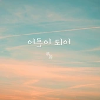
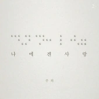
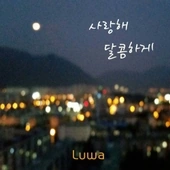
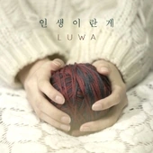
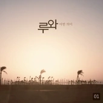
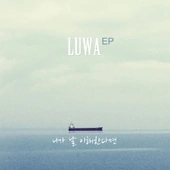

DRAMA / tvN
니가 날 이해한다면
〈아홉수소년〉 2화 배경음악
은은한 어쿠스틱 기타와 두 목소리가 만나는 포크 발라드. tvN 드라마 〈아홉수소년〉 2화에 삽입되어 장면의 감정을 함께 전했습니다.
드라마 삽입곡 소개 기사 ↗SINGER-SONGWRITER · SINCE 2012
노래로 남기는,
나의 이야기.
연구실에서는 재료를 연구하고,
음악에서는 일상에 남은 감정을 기록합니다.
루와(LUWA)는 한국재료연구원 김성웅 박사의 활동명입니다. 2012년 싱글 ‘이유’로 첫 인사를 건넸습니다. 기타와 목소리에서 시작한 이야기를 발라드와 포크, 록의 색으로 풀어갑니다.

THE NAME / THE MUSIC
‘루와’라는 이름에는 진흙으로 만든 단단한 벽돌이라는 뜻을 담았습니다. 오래 품어 온 음악을 한 곡씩 쌓아 가겠다는 마음입니다.
작사·작곡·편곡과 연주에 직접 참여하며 노래를 만들어 왔습니다. 스타러브피쉬, 안다은, 소울맨 등 서로 다른 목소리의 음악 동료들과 함께 이야기를 넓혀 왔습니다.
쓰고, 연주하고,
노래합니다.
01 / THREE SONGS, THREE STORIES
드라마의 한 장면에서, 라디오의 어느 순간에.
루와의 음악을 소개합니다.
DRAMA / tvN
〈아홉수소년〉 2화 배경음악
은은한 어쿠스틱 기타와 두 목소리가 만나는 포크 발라드. tvN 드라마 〈아홉수소년〉 2화에 삽입되어 장면의 감정을 함께 전했습니다.
드라마 삽입곡 소개 기사 ↗
FIRST ALBUM / MELON
첫 정규앨범을 대표하는 노래
기타와 피아노의 따뜻한 소리로 지나간 관계의 의미를 돌아보는 노래. 정규 1집의 타이틀곡으로, 멜론 차트에 오르며 청취자들과 만났습니다.

ON THE RADIO
라디오를 통해 전해진 위로
소울맨이 함께한 모던 포크. 바쁜 삶과 이별 뒤의 마음을 따뜻하게 감싸는 노래로, 여러 라디오 방송을 통해 청취자들에게 전해졌습니다.
02 / COMPLETE DISCOGRAPHY
앨범을 선택하면 수록곡과 멜론·지니·벅스·YT Music 감상 링크가 열립니다.
2012 — 2026
정규앨범 2장 · EP 2장 · 싱글 8장
재수록곡과 Inst.·Acoustic 버전을 포함한 전체 수록 목록입니다.
YT Music 검색은 해당 곡·버전의 검색 결과로 연결됩니다.
12개 음반 · 44개 트랙

어른이 되어2 TRACKS
나에겐 사랑11 TRACKS
사랑해 달콤하게2 TRACKS
인생이란 게5 TRACKS
어떤 의미10 TRACKS
니가 날 이해한다면5 TRACKS일치하는 노래가 없습니다.
각 플랫폼에서 로그인 또는 이용권이 필요할 수 있습니다.
03 / THE JOURNEY
첫 싱글에서 최근의 이야기까지.
루와가 쌓아 온 음악의 시간입니다.
9월 12일 싱글 ‘이유’로 데뷔.
EP ‘니가 날 이해한다면’과 정규 1집 ‘어떤 의미’ 발표. tvN 〈아홉수소년〉 배경음악 삽입.
두 번째 EP ‘인생이란 게’ 발표. 다양한 목소리와 함께한 음악.
정규 2집 ‘나에겐 사랑’ 발표.
싱글 ‘어른이 되어’ 발표.
11월 8일 싱글 ‘어떤 인연’ 발표. 록 발라드로 이어가는 새로운 이야기.

LATEST SINGLE / 2026.11.08
지나간 관계와 기억을 다시 바라보는 록 발라드.
오랜 음악의 시간 위에 놓인, 새로운 한 곡.
04 / ARTIST’S NOTE
루와 LUWA
음악은 살아가며 느낀 감정과 이야기를 가장 솔직하게 남기는 방식입니다. 유행을 좇기보다, 시간이 지나도 다시 꺼내 듣고 싶은 노래를 제 목소리로 만들고 싶습니다.
앞으로도 일상의 작은 순간과 인연을 꾸준히 곡으로 쓰고 발표하겠습니다. 발라드·포크·록의 다양한 색을 담되, 진심이 전해지는 음악이라는 중심을 지키며 더 많은 분들과 만나고자 합니다.
05 / STAY CONNECTED
공식 채널에서 루와의 음악과 다음 이야기를 만나보세요.